正君
之教
依据《中学德育大纲》《中小学文明礼仪》《中国学生素养2016》《中小学德育工作指南》（2017）和深圳中学德育目标要求，针对初三阶段德育发展和备战中考的主题，结合8班学生年龄特点和班级定位，制定本学期工作大纲。
一、任务目标
立德树人，全面发展。培养学生的竞争意识、拼搏精神、战斗素养；培养持之以恒、用心专一、勤敬有为，修己达人之德行；培养团队合作、协调关系、解决问题、革故鼎新的能力；培养管控情绪、理性表达、尊师重友、和睦家人的品质。
二、步骤内容
挑逆——心兵不乱：明确大方向、剔除小毛病、做好眼前事；
战狼——孤胆英雄：挣脱旧圈子、打造强学科、鼓励出奇兵；
竞骛——排山倒海：全科齐推进、精兵变强军、冲锋壮气势； 争鼎——笑傲江湖：优势变胜势、从容毫厘间、正大自光明。
（一）磨砺意志：核心是“挑战”，挑战自我，完善自我。让每一个学生都在实现个人目标
的征途上奔跑。
（二）合作学习：推进学科小组合作学习，发扬管理育人、协同育人之功。
（三）量化管理：分为四个学段，进行量化考核；针对性要强，加强个性化，差异化，有反馈、有跟进、有变化。
（四）综合能力：在思维能力、备考能力、审美能力、协作能力、竞争能力等方面呈现出不一般的素质。
（五）文化生活：家长群体将发挥主导作用和资源优势，定期举行与成长有关的互动活动，深化学习的情趣。合力打造亲子文化，促进学生身心健康发展。
三、组织落实
（一）加强班团两委和家委的协作，加强教师团队的合作；
（二）科学施策，问题导向，务实、落实，切实解决问题；
（三）线上线下，课内课外，合理推进，团结高效。
四、提醒注意
（一）分清主次，不要缺位、错位、越位；
（二）积极关注身心健康，毋意、毋必、毋固、毋我。
附：班级领导团队——挑战竞争，青春无悔
团支部：
李嘉骏（团支书） 付子裕（团宣委） 毛雨洋（团组委）
班委会：
班长：王艺霖 副班长：曹熙媛
学习委员：张扬柯 体育委员： 陈华慈（总负责） 吴毓焓 丁思云 宣传委员：
江静怡 张容达（协理）文娱委员：陈玥仪 生活委员：王绚儿 纪律委员：李承辉 电教管理员：刘圳宸
静校管理员：李嘉骏（总负责）杨哲宇、庞子傲
、林昶荣、徐培杰、姚彩晴 卫生委员：李嘉骏（总负责）丁思云 杨哲宇 李承辉 江静怡 姚彩晴
学习小组：仁（付子裕）、义（李梓昕）、礼（欧宇杰）、智（吴毓焓）、信（张扬柯）
家委会——
会长：黎女士（悦然妈）
学习部：宇杰妈，悦然妈，容达妈、扬柯妈 ==
文体部：瑾禹妈，静怡妈，毓焓妈==
宣传部：婧语妈，哲宇妈
财务部：绚儿妈，宝仪妈==
生涯部：华慈妈，谢彤妈，元曦妈
家长义工组
：
仁（瑾禹妈 悦然妈 华慈妈）
义（宝仪妈 静怡妈）礼（绚儿妈 宇杰妈）智（婧语妈 毓焓妈 谢彤妈）信 （容达妈 哲宇妈 扬柯妈）
1、中考考前教育
6月25日上午10：40，教学处组织中考考前教育。发准考证，签承诺书。
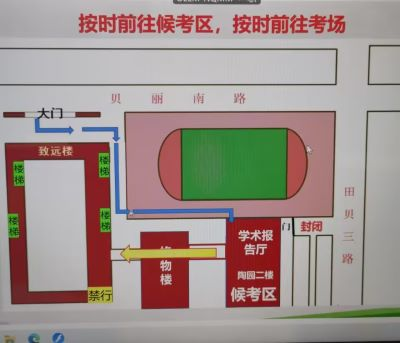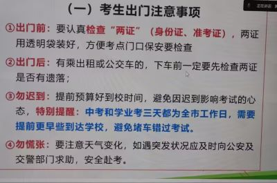
2、考前答疑
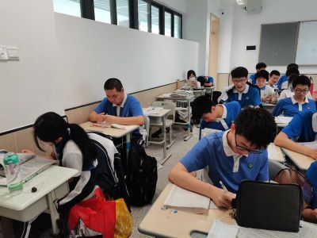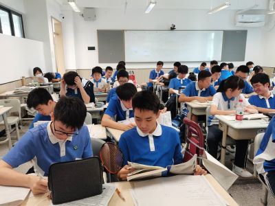
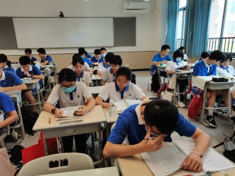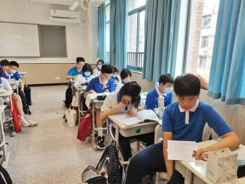
3、文明离校
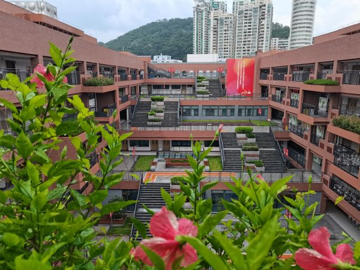
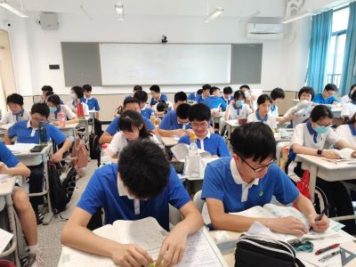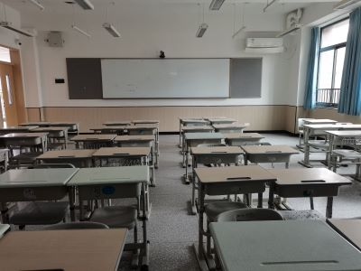
4、端午节放假
6月22-24日放假
6月12日晨，全校升旗。付为荣誉升旗手。
2、复习检测
12-13日，年级组织本月复习检测。我班43人参加。
500分以上者：付、艺、位、柯、曹、骏、欧、毛、焓、圳； 慈、云、栩、辉、玥、昶、语、庞、高、郭、哲、昕、鑫、淳、绚
3、新团员档案
本周新团员填写档案
4、自主招生报名
本周完成一类、二类自主招生报名
5、毕业纪念册素材收集
家委线上收集毕业纪念册中所需要的老师、学生的寄语、照片等素材。
6、管理
（1）上报优秀毕业生（付骏艺曹毛5人）和优秀班干部（慈辉昕3人）名单
（2） 要求班干部们站好最后一班岗，做好课堂情况记录和评价。
（3）谨慎处置偶发事件。
0605下午，学术报告厅，年级组织三模表彰活动。付、慈、位、玥上台领奖。
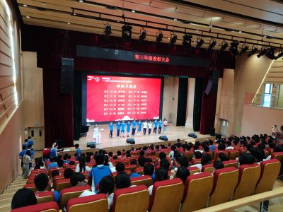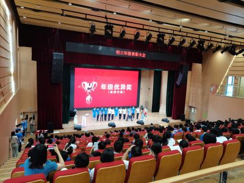
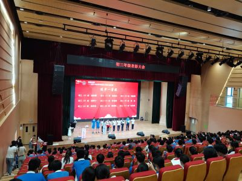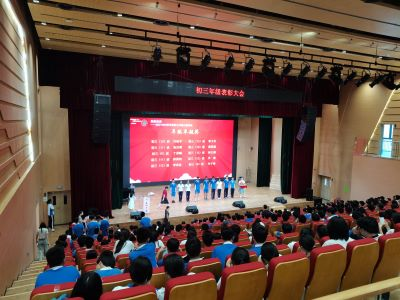
2、班级毕业照拍摄
0610上午，家委邀请专业人员为班级拍摄毕业纪念照：青春不散场


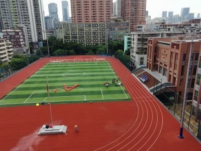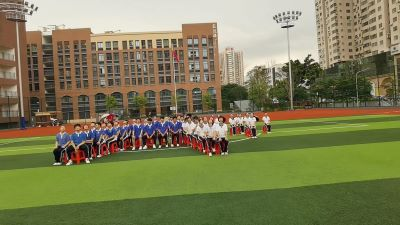
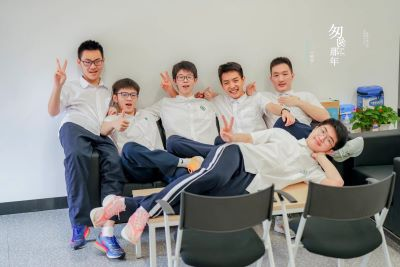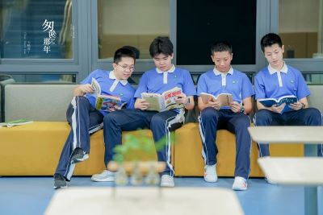
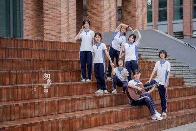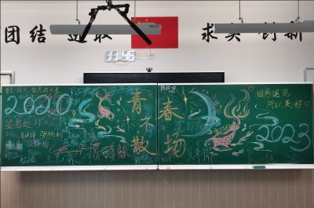
3、学期评优
0609下午，组织在校学生投票，选出优秀毕业生5人：付、骏、艺、曹、毛
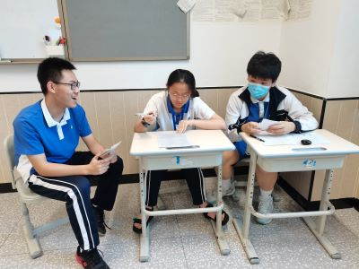
4、自招报名
一、二类自招网上（或现场）报名启动。
5月29日6点50分，全体同学来到操场，拍摄毕业照。
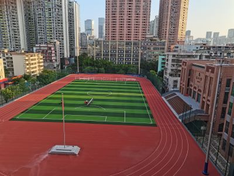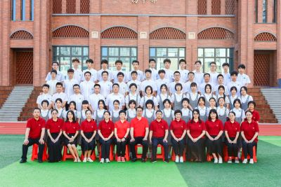
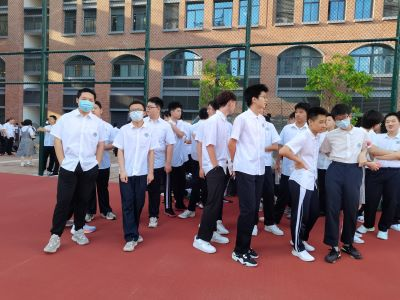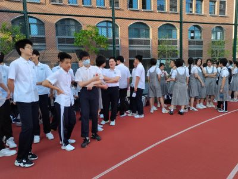
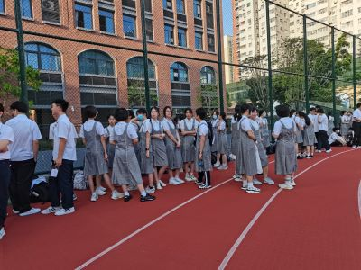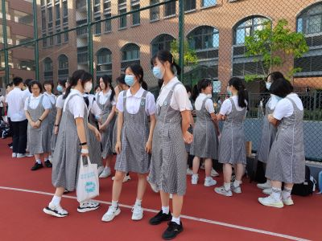
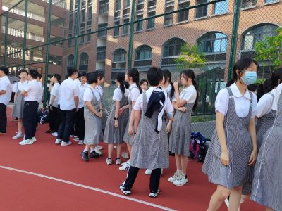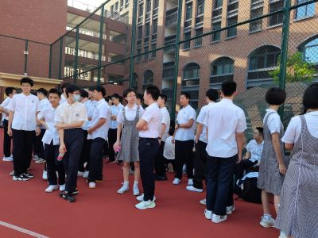
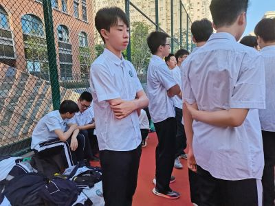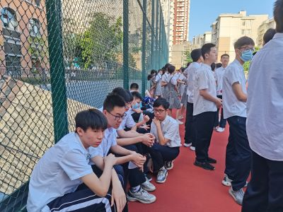
2、填报志愿
5月31日18点，志愿填报工作结束
3、评教
本学期评教工作启动
4、三模小结
（1）整体良好
（2）班团两委积极管理班级
（3）学习团队核心状态稳定
5、学生作品展
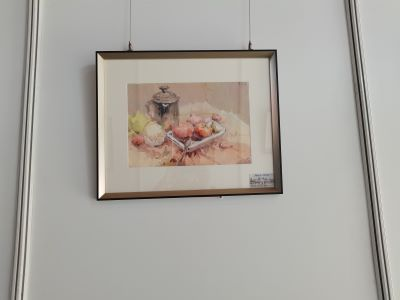容达作品
5月22-23日，三模（16校联考）。
A+等级：付、慈、艺；
A等级：骏、毛、位、曦、焓、曹、柯、玥、欧、云、栩、圳、昶、庞、语
2、家长会
5月26日晚，家长会： 中招政策宣讲、志愿填报说明、个别学校宣传。
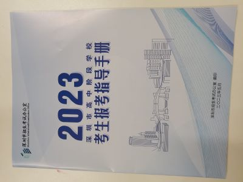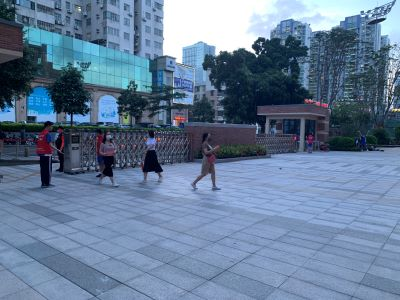
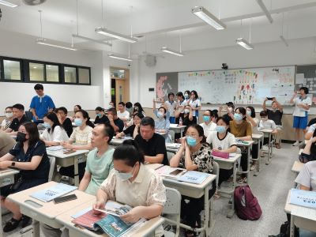

3、理化实验操作考核
5月27日上午，全体同学完成理化实验操作考核。
4、填报志愿
家长和孩子共同操作
5月15日班会课，主题是解压教育，心理辅导中心提供课件。
2、中考志愿填报视频会议
5月17日下午，年级组织班主任参加中考志愿填报视频会议，了解中招政策。
3、英语听说中考
5月20日，全班50位同学顺利完成英语听说考试。
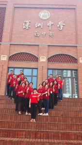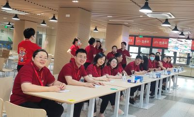
 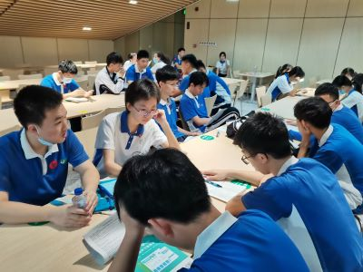
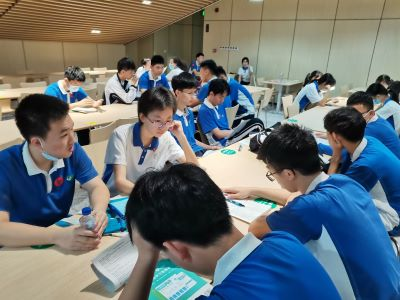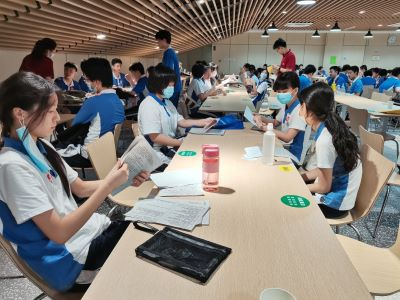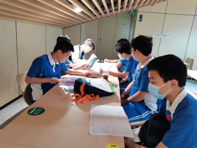
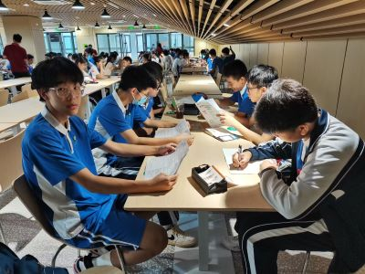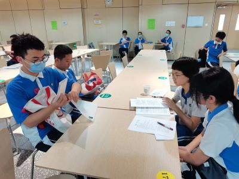
4、考前教育
5月19日下午，年级组织线上考前教育。
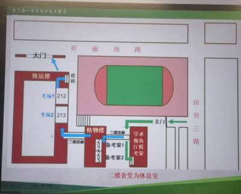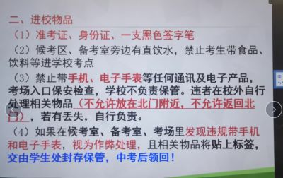
5、调整座位
5月8日班会课，主题是劳动教育。
2、高中部开放日
5月13日上午，部分同学参加高中部开放日活动。
3、义务教育证书信息确认
5月10-11日，信息确认完毕。
4、 第二轮微调
（1）部分科目变化
（2）增加机动检测
（3）加强心理引导
（4）偶论志愿方向
（5）鼓励课后运动
4月29日-5月3日，五一长假。
（1） 部分家庭组织了露营活动。
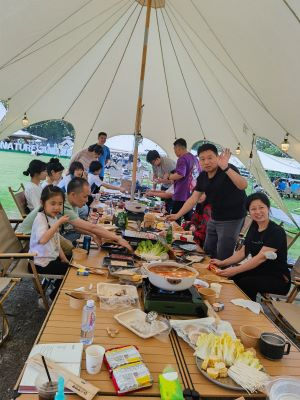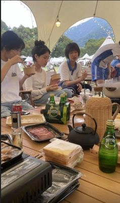
（2）观景
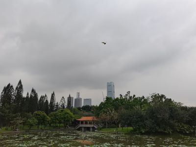
（3）运动
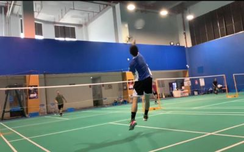
2、言语调查
倡导家长与孩子交流时多使用他们喜欢的语句。
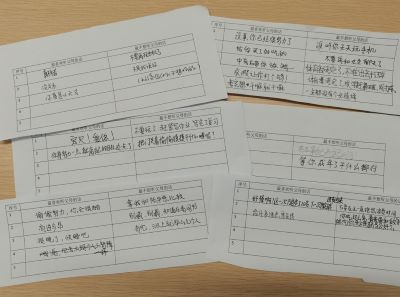
3、状态调整
（1）家校交流
（2）个别交谈
4月24日晨，班会课线上会议，体育中考考前说明。发放卡套和准考证。
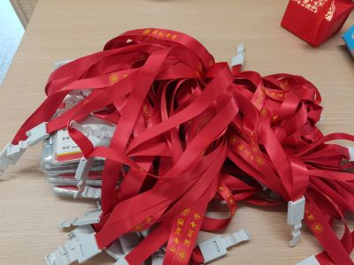
2、体育中考
4月25日上午，翠园中学初中部，7：20分入场。50人参加考试，44人满分。
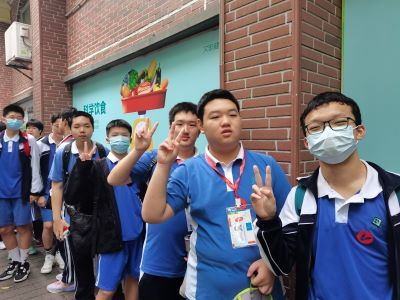
3、期中考试表彰
4月28日下午自习课时间，线上会议，期中表彰。
级卓越：付
班卓越：慈
级优异：艺、骏、焓、曹
进步二：培、慈、庞、高
4、考后状态调整
5、推荐新团员
4月24日-28日，根据校团委统一部署，个人申请、支部初议、老师意见，拟推荐5名新团员：白、辉、哲、昶、位
4月20-21日，期中考试（二模）
A+等级：付、慈；
A等级：艺、骏、焓、曹、曦、柯、云、毛、圳、位、昶
2、中考英语听说模拟
4月22日，全市模拟。
3、体育中考告知
家长阅读相关告知，并交回执
4、市级视频会议
4月18日下午。主题：心理健康、生命安全教育
5、调整座位
4月19日，将单人单座进行合并，3大组2小组。
6、周日补周二的课
4月10日晨，全校组织升旗仪式，主题是反对校园欺凌。
付子裕担任荣誉升旗手。
2、体育考试
4月10日下午，体育考试。
3、英语听说考试
4月14日上午，英语听说考试。
（考后听写单词）
4、坚持读背
1、感恩主题班会
4月3日晨，组织感恩主题的班会。
2、体育模拟考
3日下午，年级组织第二次体育模考，47人参加，45人满。未满或低于205分的同学每天训练。
3、综合评价信息确认
全班54人，全部达标，家长网上确认完毕。
4、中考报名信息确认
全班50人报名参加中考，报名信息确认完毕。
5、班级身边“奋斗者”事迹介绍
4月7日下午，宣委制作身边“奋斗者”事迹宣传板。
3月27日下午，年级举行中考助推大会。
2、中考报名信息录入
3月29日，收齐中考报名信息录入表（一），全班共50人报名参加中考。4人因个人原因选择其它赛道。
3、拍摄准考证照片
3月31日下午，事务中心组织拍照。
3月20日班会课，按学校学生处统一部署，组织召开了以“防范校园欺凌、珍惜同学友谊”为主题的班会。
2、联考情况
3月21日出了联考成绩。 A+等级：付、艺； A等级：焓、云、曦、曹、柯、骏、慈、位、毛、欧、圳、玥、昶。
3、明确目标
3月22日下午，全班同学根据个人成绩与意愿，对照去年中考录取线，拟定冲刺目标，并张贴在宣传栏。
4、其它事务
（1）完成综合评价评语上传
（2）精准帮扶体育未满同学
（3）中考助推活动彩排
（4）中考中招视频会议
3月13日晨，学校组织集会，主题是学雷锋。
班级支部成员谈集会感想
2、采集毕业证照片
3月14日上午，学校采集毕业证照片。
3、考前教育
3月16日晨，年级线上组织考前教育。
4、联考
16、17日两天 ，年级组织联考
5、综合评价
班团两委主要成员艺、曹、骏补充班级评语
过半家长完成评语上传
6、加强体能训练
1、测试
（1）联考英语听说考试（0309）
（2）体质测试（0309-10）
（3）体育补测（0310）
2、林昶荣同学夺得省赛冠军
3、欧宇杰同学在国际数学比赛中取得优异成绩
4、
读背20分钟

5、综合评价启动
3月1日下午第三节课时间，年级在报告厅召开表彰大会。下列同学上台领奖：付、艺、骏、曹、圳、位、欧、曦、焓、玥、云、慈、毛、航。
2、十大歌手决赛
2月27日下午，校园十大歌手决赛，婧语同学奉献天籁之音。
3、家委座谈（家校协同）
3月1日晚8点，本班教室，家委成员座谈。
4、录制助威视频
3月4日下午，近30位家长进入校园，拍摄助威视频。
5、整顿基本面
（1）Q群发布作业
（2）增加读背时间
（3）强化分层课堂秩序
（4）强调运动纪律与安全
2、设置倒计时(屏幕右上方）
3、体育模拟考
2月26日下午，翠园初中部，年级组织体育模拟。
4、体育模拟-考前教育
2月24日，在组织线上报名之后，年级又组织了考前教育。
5、整顿基本面
（1）课堂纪律
（2）作业质量
（3） 学生情绪
（4）同学摩擦
（5）考后心态
2月13日晨，腾讯会议，教学处进行考前诚信教育。
班主任：纠错方法指导
2、 适应性考试
2月16、17日，适应性考试。
3、制作板报
4、捐款
本周家委会组织全体家长为我校王老师捐助爱心款合计11020元。
2月6日16：30，初中部操场，学校举行开学典礼。主题：奋斗创奇迹 筑梦新征程
2、主题班会
2月6日下午第三节课，班级组织主题班会：收心归位 鸿兔大展
3、班干部会议
2月10日17点，613会议室，全体班干部。
（1）通报班级个别同学更换赛道（请假）事宜
（2）班子变化：团宣委付、团组委毛、班宣委江、达，班卫委姚、白
（3）讨论主题：“如何更好进入备考状态”，5位同学发言
4、适应性考试之英语听说
2月9日8点，班级参加英语听说考试。
1、报到
2月5日下午2：20，本班教室，学生报到。
内容：检查仪表、交寒假作业、领书、简短动员、做卫生（仁组）。
5位同学更换赛道
2、班级被评为“先进班集体”
3、给家委：中考之年，奋飞之时，家校协同，大展宏免
初三：挑战竞争 青春无悔
czjszsz@qq.com